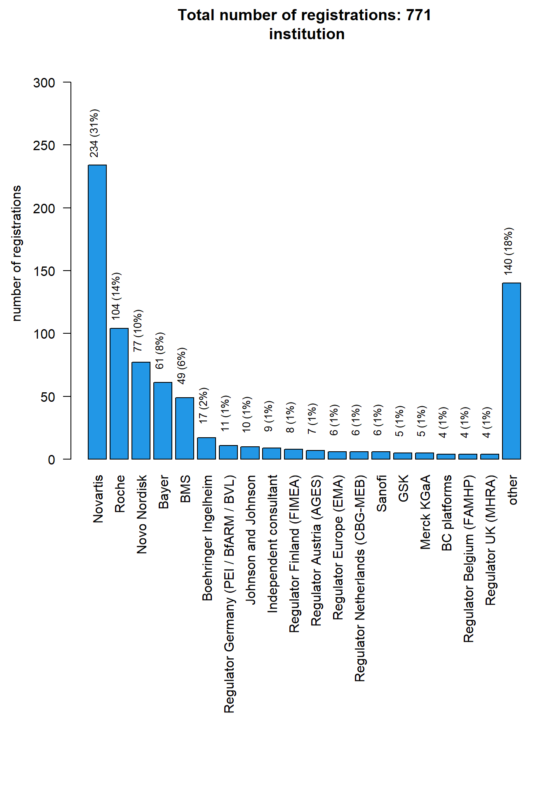
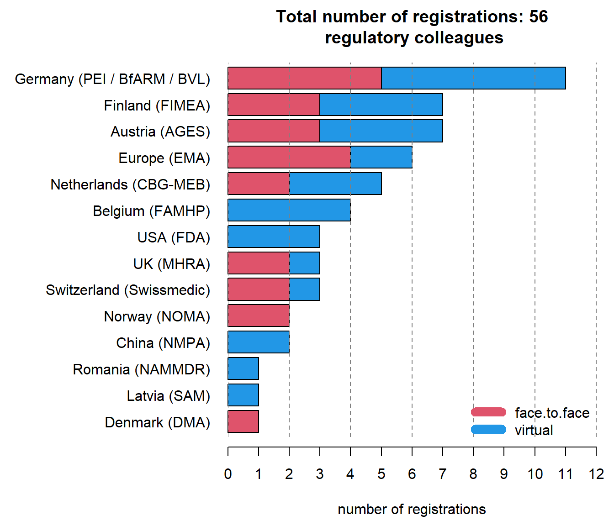
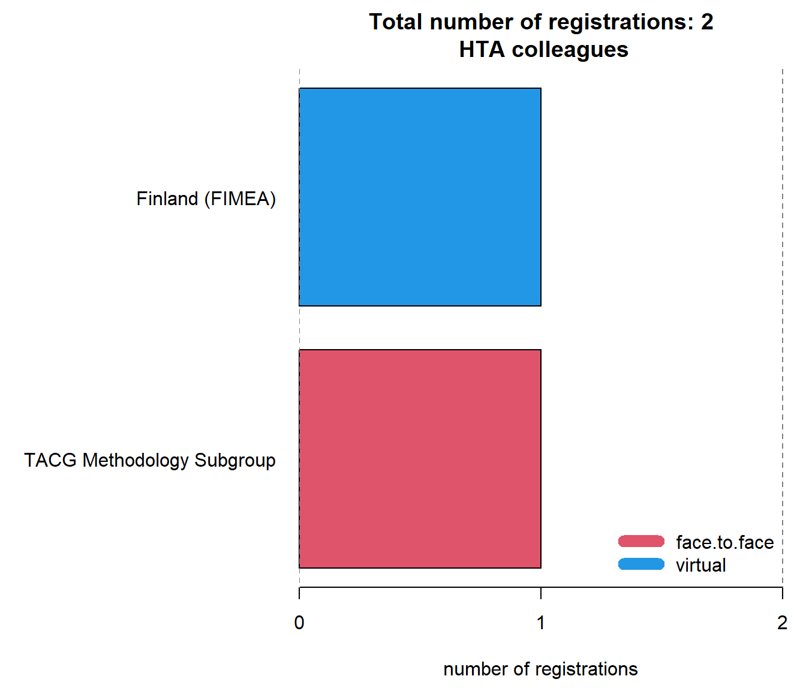
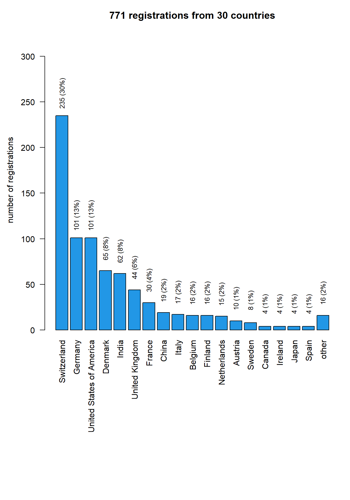
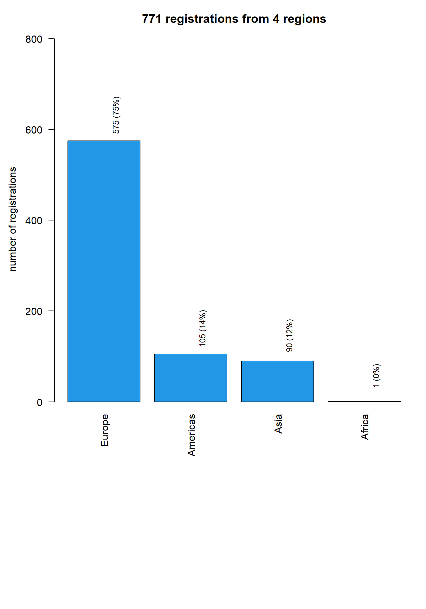
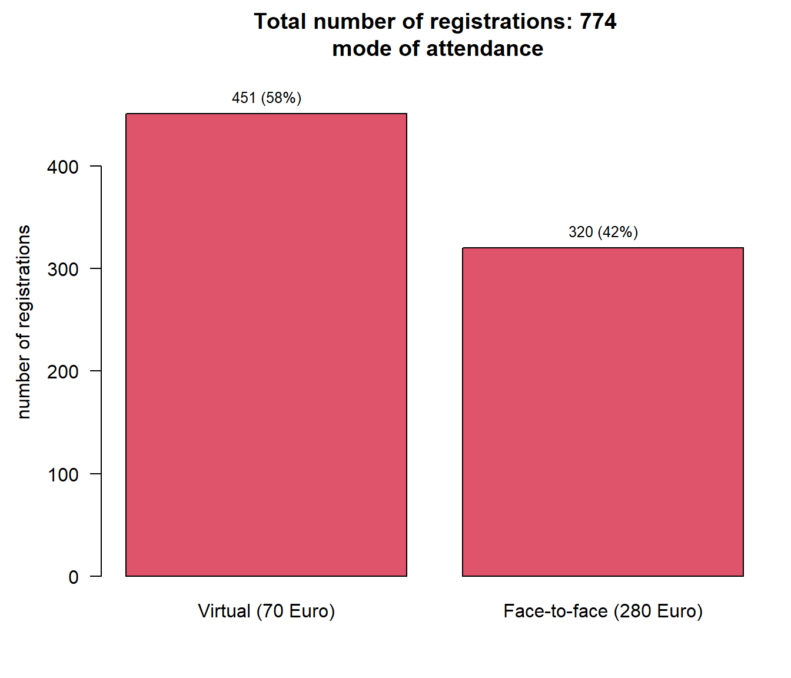
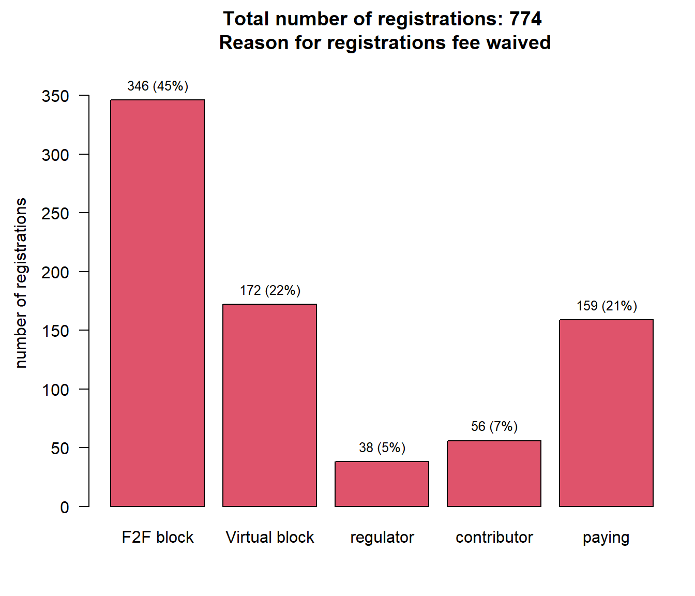

EFSPI regulatory statistics workshop 2024: analysis of registrations
Data status
Data as of 2025-05-08 at 17:24:02.
Registrations by type of institution
Registrations by background
Registrations by institution

Registrations of regulatory colleagues

Registrations of HTA colleagues

Registrations by countries

Registrations by countries - map
Registrations by geographic region

Registrations by mode of attendance

Registrations by mode of attendance and F2F block booking status
| Boehringer Ingelheim (N=17) | Novartis (N=234) | Roche (N=104) | Total (N=355) | |
|---|---|---|---|---|
| mode | ||||
| Face-to-face (280 Euro) | 4 (23.5%) | 103 (44.0%) | 66 (63.5%) | 173 (48.7%) |
| Virtual (70 Euro) | 13 (76.5%) | 131 (56.0%) | 38 (36.5%) | 182 (51.3%) |
Registrations by mode of attendance and virtual block booking status
| Bayer (N=61) | BMS (N=49) | Novo Nordisk (N=77) | Total (N=187) | |
|---|---|---|---|---|
| mode | ||||
| Face-to-face (280 Euro) | 2 (3.3%) | 6 (12.2%) | 7 (9.1%) | 15 (8.0%) |
| Virtual (70 Euro) | 59 (96.7%) | 43 (87.8%) | 70 (90.9%) | 172 (92.0%) |
Registration waived yes / no

Registrations by meals and wine tasting
No-shows among those who registered for face-to-face participation
| Novartis (N=103) | Roche (N=66) | Total (N=169) | |
|---|---|---|---|
| noshow | |||
| show | 90 (87.4%) | 58 (87.9%) | 148 (87.6%) |
| no show | 13 (12.6%) | 8 (12.1%) | 21 (12.4%) |